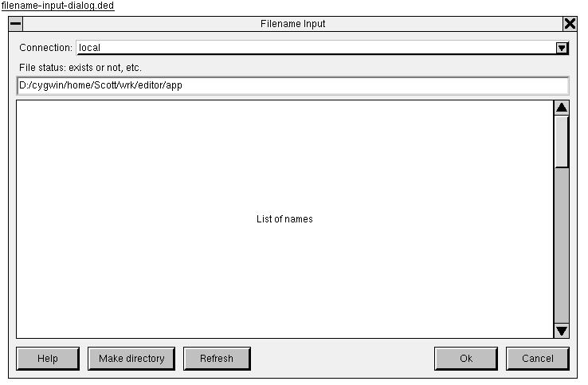

The "Filename Input" dialog allows the user to choose a file to open, or the name of a new file to create, or the name to write the current document to ("Save as" mode).

The dialog has these controls, laid out from top to bottom:
connection: Connection dropdown, preceded by the label
"Connection:". This controls which machine is being queried. There
is always one entry for "local", but may be other names if other
machines are currently connected. When the dropdown is changed,
filename is reset to the user's home directory on the
chosen machine.
status: File name status label that shows whether the
current file name exists, etc. See File
status.
filename: Text line edit control containing the full
path to the file to open. When focus is on this control, pressing
Tab completes the name with as much text as possible without
removing any choices.
list: List of files that are in the directory of the
specified file name and begin with a matching prefix string. This
control cannot receive focus, although its scrollbar can be
manipulated with the mouse. Its contents are updated any time
connection or filename changes.
When the dialog is invoked from the editor, it is passed an initial
host and directory to show. These are used to set the initial values
of connection and filename.
The directory information shown comes from another process. Changing
the filename or connection may cause a new
request to be sent, and while that request is outstanding, the
status and list controls must reflect the lack
of current information.
For status, if we are awaiting information about a
directory, it shows "Loading directory: $DIR".
For list, the box simply shows "Loading ..." in that
situation.
The file status indicator shows one of the following labels describing
filename and how it relates to the files on disk (on the
machine indicated by connection) and in the editor's list
of open files:
The status label updates whenever filename or
connection changes.
When the Ok button is pressed:
filename is empty, do nothing.
Note that the logic does not exactly match the file name status indicator. TODO: Perhaps reconcile them.
connection:
filename:
list up or down by one page.
connection dropdown.
filename.